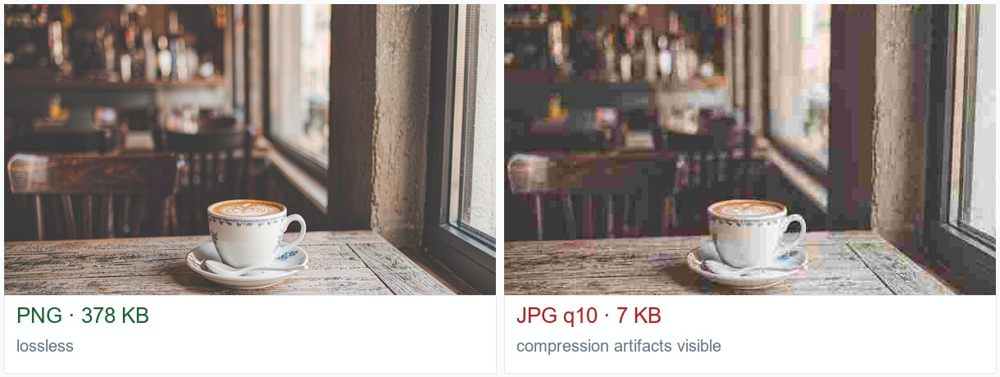
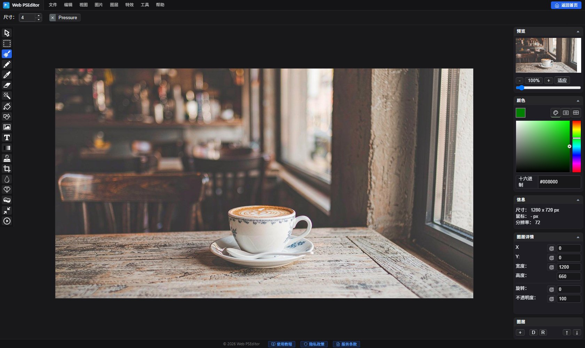

实战教程：PNG 与 JPG 怎么选？一次讲透透明背景与导出设置
导出格式不再纠结！
打开 Web PSEditor 导出 →
PNG/JPG 随心导出，透明背景本地保留。
「导出时到底选 PNG 还是 JPG？」——选错的结果要么是文件大得传不出去，要么是图片糊得没法看，要么是该有的透明背景变成了白底黑块。其实选择逻辑只有三句话，看完这篇你就再也不用纠结。
一图看懂：同样的图，两种格式差多大

三句话选择逻辑
1. 需要透明背景（抠图、签名、贴纸）→ 只能选 PNG，JPG 不支持透明。
2. 需要文字锐利、多次编辑（截图、设计稿、再加工）→ 选 PNG，无损不失真。
3. 就是发照片（人像、风景、商品图）→ 选 JPG 质量 85，体积小 10 倍，肉眼几乎无差。
编辑器导出实操

第一步：打开导出面板
编辑完成后点击 【文件】→【另存为】，在弹出面板中选择输出格式 PNG 或 JPG。
第二步：JPG 质量这样设
JPG 选质量 85~90：这是「画质几乎无损、体积大幅缩小」的最佳平衡点。低于 70 会出现明显色块，高于 95 体积暴涨却看不出差别。
第三步：PNG 透明背景要点
若画面有透明区域（如抠好的人像），必须导出 PNG 才能保留。导出前确认图层未合并，或在【图层】菜单按需合并。
💡 上传网站或微信传图前的偷懒公式：照片用 JPG 85，带字截图和透明素材用 PNG，体积立刻省 80%。
🎯
动手实操练习
纯本地运算
打开编辑器，把同一张图分别导出 PNG 和 JPG 对比体积与画质。